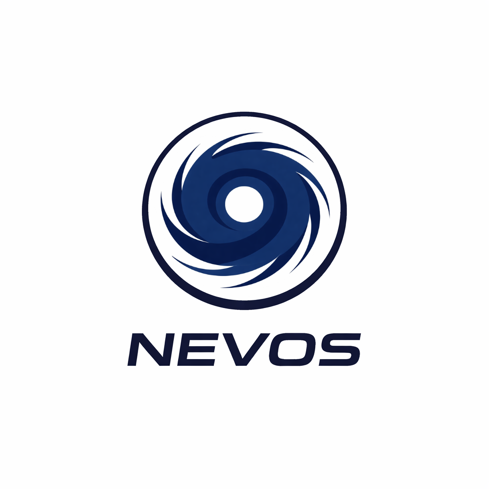

Parceiros Oficiais
Instituições e núcleos que colaboram com o desenvolvimento da meteorologia no Brasil.

NEVOS
Parceiro OficialNúcleo de Estudos de Vórtices e Ocorrências Severas
É um Grupo de estudos de eventos rotacionarios (ciclones e tornados) e eventos severos. O grupo faz estudos frequentemente sobre ocorrências severas que ocorrem atualmente